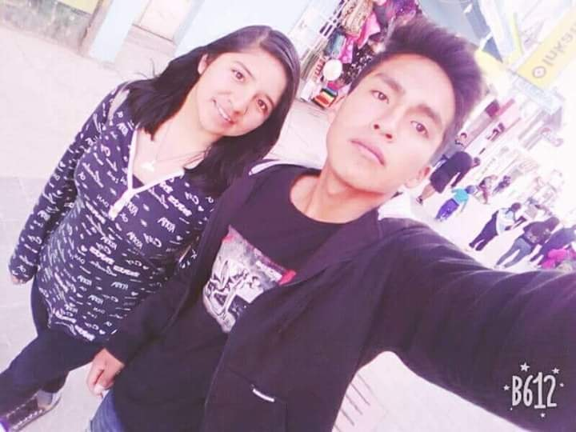
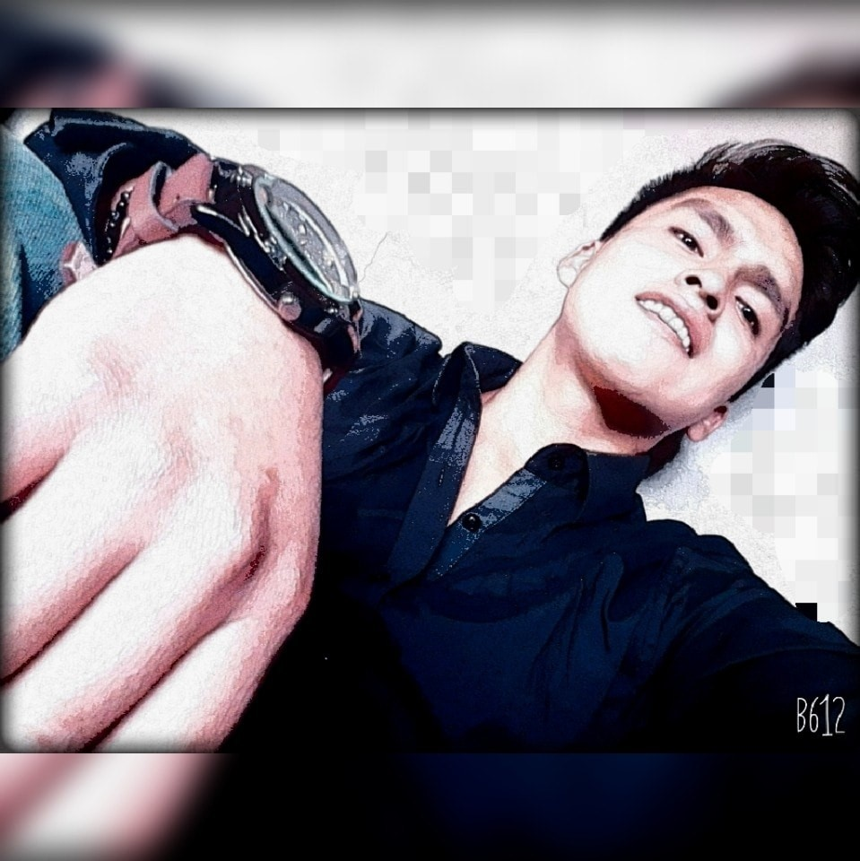

MOMENTOS A TU LADO
Cada momento a tu lado ya sea unas horas o unos simples minutos
son suficientes para mi para abrazarte y decirte que te amo como nunca lo habia hecho
,eres la persona que saca lo mejor de mi y eso me gusta.
Contigo pase momentos que de verdad siempre recordare con alegria y pues bueno esperando con ansias
a que sigan dandose nuevos recuerdos de los dos juntos asi.
Al principio como sabes me costaba y más cuando nos conocimos en persona ,estaba tan nerviosa y con miedo
a que talves tu no sientas lo mismo que yo siento por ti .Pero gracias a Dios que si sucedio eso.
Cada momento a tu lado me alegra un monton y bueno despues de dias de estar tu trabajando y yo estudiando
,te llego a extrañar un monton .A tu lado voy perdiendo la inseguridad de mi misma que se que todavia lo tengo
porque talvés antes me hicieron sentir asi de falta,gracias a ti ya estoy superando poco a poco eso,porque me encanta
que demuestres todo tu cariño siempre y en cualquier lugar me hace muy feliz todo contigo.
TE AMO DEMASIADO ,y enserio gracias por cada dia hacerme feliz,contigo quiero pasar muchas cosas
que queden grabadas para siempre y bueno puedo decirte que no pienso fallar y pondre de todo para que nuestra relación
siga marchando bien .Como te dije la base de todo sera confianza,honestidad y sinceridad ,asi podremos con todo
y bueno si mas adelante llegamos quien sabe no a tener algunas problemitas o nose ,siempre dialoguemos y digamos lo
que queremos expresar ,que asi solucionaremos todo .No dejemos que ningun problema o obstaculo que aparezca en el camino
nos separe ,yo quiero hacerte feliz y hacer que ambos mejoremos y cumplamos todas nuestras metas juntos .TE AMO ANDERSON

